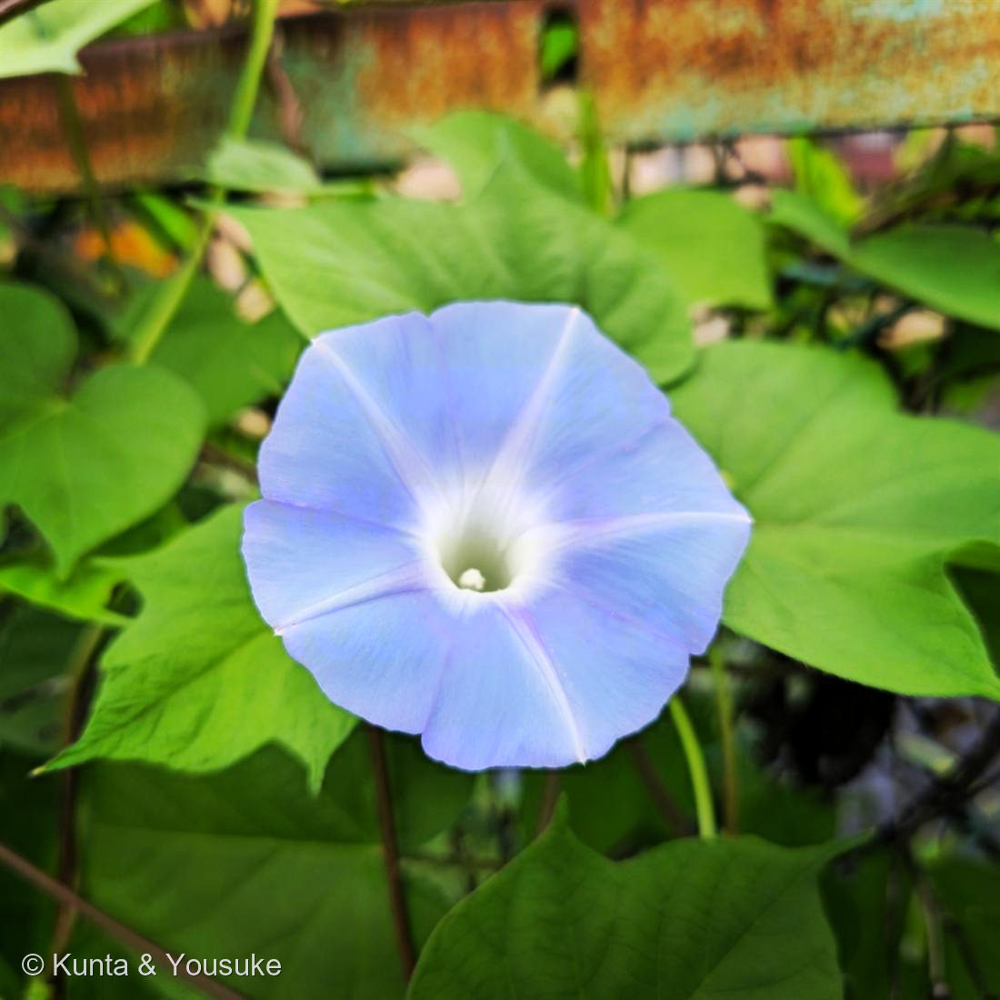

地図を読み込んでいるよ…
🔍 写真も地図も、押しているあいだ拡大して見られるよ（スマホは指を置いてすこし待ってね）。
🌍 の地図＝この子がもともと自生している場所を緑に。熱帯アメリカ。
夏休みの花なのに、日本は塗っていない。この子は熱帯アメリカから来て、空き地で野生化した子だよ。
⚠ 地図は国（日本と中国だけ県・省）までしか塗れないから、ほんとうの分布より広く見えていることがあるよ。地図はだいたいの場所。正確なところは、上の文を見てね。
アサガオ
Ipomoea sp.
この個体はマルバアサガオ（I. purpurea）と見られる／学習アサガオは I. nil
ヒルガオ科 · Convolvulaceae（サツマイモ属）
陽介の大好き近所の空き地で夏休みの子供の花
名前と学名の由来
- Ipomoea（イポモエア）＝ギリシャ語「ips（芋虫・ヒルガオ類）」＋「homoios（似た）」で、つるが這う・巻く姿にちなむとされる。サツマイモ属の属名。
- purpurea＝ラテン語「紫色の」（花色）。／nil＝アラビア語「藍・青」から＝青い花（日本のアサガオ I. nil）。
この植物のこと
- ヒルガオ科サツマイモ属のつる性一年草。熱帯アメリカ原産。サツマイモ（Ipomoea batatas）と同じ属の仲間。
- 朝いちばんに開いて昼にはしぼむ（＝朝顔）。No.005ヒルガオ（昼咲き・多年草・Calystegia）とは別属。見分けの決め手＝花のすぐ下の大きな苞：ヒルガオ＝あり／アサガオ＝なし（小さな萼が見える）。← 005「要確認」の判定ポイントそのもの。
- 空き地や道ばたでよく野生化（マルバアサガオ・アメリカアサガオなど）。この個体は葉が丸いハート形（切れ込まない）→マルバアサガオと見られる。小学校で育てる“日本のアサガオ”は I. nil（葉が3裂することが多い）。
- 小学1年生の栽培の定番。種から育てて、花・種取りまで観察する、夏休みの花。
- 研究の宝庫：アサガオ（I. nil）は光周性（短日植物）研究のモデル。さらに動く遺伝子（トランスポゾン）が花色に「絞り・斑」を出し、江戸時代の「変化朝顔」（多彩な変異体コレクション）につながった。